<div class="loading" *ngIf="!mostrar"></div>
<div class="parent" *ngIf="mostrar">
        <div class="titular">
            <h4>Información</h4>
            <h3>Comercial</h3>
            
        </div>

        <div class="exit">
            
        </div>

    </div>
    <app-menu></app-menu>

    <head>
        <script src="https://aframe.io/releases/1.2.0/aframe.min.js"></script>

    </head>

    <body>
        <a-scene class="escena" loading-screen="enabled:true ; backgroundColor : #560396 ; dotsColor: #db04bb  "
            cursor="rayOrigin:mouse">

            <a-assets>
                
                
                
                
                
                
                
                
                
                
                


            </a-assets>

            <a-entity id="camera-container" rotation="0 -77 0" #camita>
                <a-entity id="camera" camera="fov:80" look-controls></a-entity>
            </a-entity>

            <a-sky id="fondo" src="../../assets/Productos/newplace.jpg"></a-sky>

            <!-- clic pc -->
            <a-entity id="clic_pc" (click)="goToAr('pc')" animation__scale="property: scale; dir: alternate; dur: 1000;
    easing: easeInSine; loop: true; to:0.025 0.025 0.025"></a-entity>

            <!-- clic logo -->
            <a-plane id="clic_logo" position="4.2 0.2 -1.7" src="#logo" transparent="true" scale="0.7 0.23 0.5"
                rotation="0 -57.8 0" (click)="goToUrl('logo')" *ngIf="mostrar">
            </a-plane>

            <a-plane id="info_mac" position="3.8 -0.3 1.0" src="#info_mac" transparent="true" scale="1.6 1.1 1.1"
                rotation="0 -100 0" *ngIf="mostrar" emissive="#FFF" #mover>
            </a-plane>
            <a-plane id="ar_tittle" position="8.3 0.7 -1.4" src="#ar_tittle" transparent="true" scale="2 1.1 1.1"
                rotation="0 -90 0" *ngIf="mostrar">
            </a-plane>
            <a-plane id="apple" position="3.8 -0.2 0.3" src="#apple" transparent="true" scale="0.08 0.09 0.2"
                rotation="0 -100 0" *ngIf="mostrar"></a-plane>
            <!--clic texto-->
            <a-plane id="clic_texto" position="9.3 -1 -1.1" src="#vista_3d" scale="0.6 0.13 1.1" transparent="true"
                rotation="0 -90 0" *ngIf="mostrar" (click)="goToAr('texto')"></a-plane>
            <!-- clic icono-->
            <a-plane id="clic_icon" position="8.3 -0.5 -0.9" src="#ar_icon" scale="0.5 0.5 1.0" transparent="true"
                rotation="0 -90 0" *ngIf="mostrar" (click)="goToAr('icono')"></a-plane>


            <!-- Retina ---------------------------------------------------------------------------------------- -->

            <a-entity id="retina" rotation="0 -154.69688581193688 0" position="12.13 -13.6 29.535" rotation="0 567 0"
                scale=" 0.020 0.020 0.020" retina-manager-object
                animation__move="property: position; to:4.422 -4.76 10.46; dur: 1500; dir: normal ; easing:easeInOutCubic; startEvents: play-anim-object; pauseEvents: pauseA-anim; stopEvents: stop-anim"
                animation__scale="property: rotation; to: 0 205 0; dur: 1500; 
dir: normal; easing: easeInOutCubic ; startEvents: second"
                animation__rewind="property: rotation; to: 0 567 0; easing: easeInOutCubic; startEvents: rewind-animRE ; "
                animation__mrewind="property: position; to: 12.13 -13.6 29.535; easing: easeInOutCubic; startEvents: rewind-moveRE">
            </a-entity>

            <a-plane id="ghost1" visible="false" material="color:blue;side:double;opacity:0.4" position="1.438 0 1.005"
                src="#png" rotation="0 -153.280 0" scale=" 0.1 0.1 0.1" retina-manager
                animation__move="property: position; to:1.438 0 1.005; dur: 300; dir: normal; startEvents: play-anim; pauseEvents: pauseA-anim; stopEvents: stop-anim"
                animation__scale="property: scale; to: 1 0.5 1.5; dur: 900; 
      dir: normal; easing: easeInOutCubic; startEvents: second"
                animation__rewind="property: scale; to: 0 0 1.5; easing: easeInOutCubic; startEvents: rewind-animRE">

                <a-circle id="close_retina" visible="false" material="color:red;side:double" radius="0.0001"
                    scale="0.5 1 1" position="0.465 0.435 0.02" retina-manager animation__scale="property: radius; to: 0.065; dur: 2000; 
    dir: normal; easing: easeInOutCubic; startEvents: second"
                    animation__rewind="property: radius; to: 0.03; easing:easeInOutSine; dir:normal; startEvents: rewind-animRE">
                </a-circle>
            </a-plane>

            <a-plane id="ghost2" visible="false" material="color:blue;side:double;opacity:0.4" position="-0.19 0 1.945"
                src="#png" rotation="0 207.13 0" scale=" 0.1 0.1 0.1" retina-manager
                animation__move="property: position; to:-0.19 0 1.945; dur: 300; dir: normal; startEvents: play-anim; pauseEvents: pauseA-anim; stopEvents: stop-anim"
                animation__scale="property: scale; to: 1 0.5 1.5; dur: 900; 
   dir: normal; easing: easeInOutCubic; startEvents: second"
                animation__rewind="property: scale; to: 0 0 1.5; easing: easeInOutCubic; startEvents: rewind-animRE">

            </a-plane>

            <a-plane id="banner_retina" position="2.29291 -0.16318 4.74821" src="#bn_retina"
                material="opacity: 1; roughness: 0.5; side: double;transparent:true" scale="2.3 0.7 0.6"
                rotation="0 210 0" retina-manager animation__scale="property: scale; dir: alternate; dur: 1000;
        easing: easeInSine; loop: true; to:2.5 0.9 0.8">

            </a-plane>

            <a-plane id="texto_retina" position="2.29291 -0.91186 4.74821" src="#cn_retina"
                material="opacity:1;transparent:true" scale="4 0.3 1" rotation="0 210 0"></a-plane>


            <!-- procesadores ---------------------------------------------------------------------------------------- -->

            <a-entity id="procesador" rotation="0 473.5 0" position="-25.3 -12.019 9.689" scale=" 0.020 0.020 0.020"
                procesador-manager-object
                animation__move="property: position; to:-10.7 -4.48 6.873 dur: 1500; dir: normal; startEvents: play-anim-object; pauseEvents: pauseA-anim; stopEvents: stop-anim"
                animation__scale="property: rotation; to: 0 124 -1; dur: 1500; 
dir: normal; easing: easeInOutCubic; startEvents: second"
                animation__rewind="property: rotation; to: 0 473.5 0; easing: easeInOutCubic; startEvents: rewind-animPR"
                animation__mrewind="property: position; to: -25.3 -12.019 9.689; easing: easeInOutCubic; startEvents: rewind-movePR">
                ></a-entity>

            <a-plane id="banner_procesador" position="-3.52 0.143 1.81" src="#bn_retina"
                material="opacity: 1; roughness: 0.5; side: double;transparent:true" scale="2.3 0.7 0.6"
                rotation="0 110.74987700981248 0" procesador-manager animation__scale="property: scale; dir: alternate; dur: 1000;
easing: easeInOutCubic; loop: true; to:2.5 0.9 0.8">

            </a-plane>

            <a-plane id="ghost1_procesador" visible="false" material="color:orange;side:double;opacity:0.4" src="#png"
                position="-0.83 -0.28 2.31" rotation="0 131.6 0" scale=" 0.1 0.1 0.1" procesador-manager
                animation__move="property:position;to :-0.83 -0.28 2.31; dur: 300; dir: normal; startEvents: play-anim; pauseEvents: pauseA-anim; stopEvents: stop-anim"
                animation__scale="property: scale; to:  1.55 0.77 1.16; dur: 900;dir: normal; easing: easeInOutCubic; startEvents: second"
                animation__rewind="property: scale; to: 0 0 1.5; easing: easeInOutCubic; startEvents: rewind-animPR">
                <a-circle id="close_procesador" visible="false" material="color:red;side:double" radius="0.0001"
                    scale="0.540 1 1" position="0.465 0.435 0.02" procesador-manager animation__scale="property: radius; to: 0.065; dur: 2000; 
    dir: normal; easing: easeInOutCubic; startEvents: second"
                    animation__rewind="property: radius; to: 0.03; easing:easeInOutSine; dir:normal; startEvents: rewind-animPR">
                </a-circle>                
            </a-plane>


            <a-plane id="ghost2_procesador" scale="0 0 1.5" visible="false" material="color:red;side:double;opacity:0.4"
                src="#png" position="-1.711 -0.38 -0.051" rotation="0 110.9 0" procesador-manager
                animation__move="property: position; to:-1.711 -0.38 -0.051; dur: 300; dir: normal; startEvents: play-anim; pauseEvents: pauseA-anim; stopEvents: stop-anim"
                animation__scale="property: scale; to: 0.80 1.280 1.31; dur: 900; 
dir: normal; easing: easeInOutCubic; startEvents: second"
                animation__rewind="property: scale; to: 0 0 1.5; easing: easeInOutCubic; startEvents: rewind-animPR">

            </a-plane>
            <!-- Ambient Light-->
            <a-entity light="type:ambient;color: #BBB"></a-entity>
            <!-- Directional Light-->
            <a-entity light="type:directional;color: #BBB;intensity:0.6;castShadow:false" position=" -0.5 1 1">
            </a-entity>
            <!-- Custom Ambient Light
    <a-entity id="test" light="type:ambient;color: #BBB"></a-entity> -->

            <!-- bateria-->

            <a-entity id="bateria" rotation="0 0 0" position="1.08784 -13.6 -32.56" scale=" 0.030 0.030 0.030"
                src="#png" bateria-manager-object
                animation__move="property: position; to:0.750 -5.34 -18.2; dur: 1500; dir: normal; startEvents: play-anim-object; pauseEvents: pauseA-anim; stopEvents: stop-anim"
                animation__scale="property: rotation; to: 0 360 0; dur: 1500; 
dir: normal; easing: easeInOutCubic; startEvents: second"
                animation__rewind="property: rotation; to: 0 0 0; easing: easeInOutCubic; startEvents: rewind-animBA"
                animation__mrewind="property: position; to: 1.08784 -13.6 -32.56; easing: easeInOutCubic; startEvents: rewind-moveBA">
                >
            </a-entity>

            <a-plane id="banner_bateria" position="0.337 -0.085 -4.22" src="#bn_retina"
                material="opacity: 1; roughness: 0.5; side: double;transparent:true" scale="2.3 0.7 0.6"
                rotation="0 0 0" bateria-manager animation__scale="property: scale; dir: alternate; dur: 1000;
        easing: easeInOutCubic; loop: true; to:2.5 0.9 0.8">

            </a-plane>

            <a-plane id="ghost1_bateria" visible="false" material="color:purple;side:double;opacity:0.4" src="#png"
                position="0.098 -2.14 -3.120" rotation="-15 0 0" scale=" 0 0 1.5" bateria-manager
                animation__move="property:position;to :0.098 -2.14 -3.120; dur: 300; dir: normal; startEvents: play-anim; pauseEvents: pauseA-anim; stopEvents: stop-anim"
                animation__scale="property: scale; to:  3.545 1.590 2.660; dur: 900; 
  dir: normal; easing: easeInOutCubic; startEvents: second"
                animation__rewind="property: scale; to: 0 0 1.5; easing: easeInOutCubic; startEvents: rewind-animBA">
                <a-circle id="close_bateria" visible="false" material="color:red;side:double" radius="0.0001"
                    position="0.465 0.435 0.02" scale="0.540 1 1" bateria-manager animation__scale="property: radius; to: 0.080; dur: 2000; 
dir: normal; easing: easeInOutCubic; startEvents: second"
                    animation__rewind="property: radius; to: 0.0001; easing:easeInOutSine; dir:normal; startEvents: rewind-animBA">
                </a-circle>
            </a-plane>

            <a-entity id="teclado" scale="0.36971 0.36971 0.36971" geometry="primitive:plane;"
                material="shader:gif;src:#gif;" gif="" rotation="0 64.9315880487908 0"
                position="-6.99594 -2.5447 -1.97098" teclado-manager
                animation__move="property:position;to :-7 -2.5447 -1.97098; dur: 900; dir: normal; startEvents: play-anim; pauseEvents: pauseA-anim; stopEvents: stop-anim"
                animation__rewindm="property: position; to: -6.99594 -2.5447 -1.97098; easing: easeInOutCubic; startEvents: rewind-moveTE">
            </a-entity>


            <a-plane id="ghost1_teclado" visible="true" material="color:green;side:double;opacity:0.4" src="#png"
                position="-6.99 -0.95 -1.97" rotation="0 68.32 0" scale=" 0 0 1.5" teclado-manager
                animation__move="property:position;to :-2.75 -0.42 -1.4; dur: 900; dir: normal; startEvents: play-anim; pauseEvents: pauseA-anim; stopEvents: stop-anim"
                animation__scale="property: scale; to:  3.545 1.590 2.660; dur: 1200; 
  dir: normal; easing: easeInOutCubic; startEvents: second"
                animation__rewind="property: scale; to: 0 0 1.5; easing: easeInOutCubic; startEvents: rewind-animTE">
                <a-circle id="close_teclado" visible="true" material="color:red;side:double" radius="0.0001"
                    position="0.465 0.435 0.02" scale="0.540 1 1" teclado-manager animation__scale="property: radius; to: 0.080; dur: 2000; 
dir: normal; easing: easeInOutCubic; startEvents: second"
                    animation__rewind="property: radius; to: 0.0001; easing:easeInOutSine; dir:normal; startEvents: rewind-animTE">
                </a-circle>
            </a-plane>


        </a-scene>
    </body>